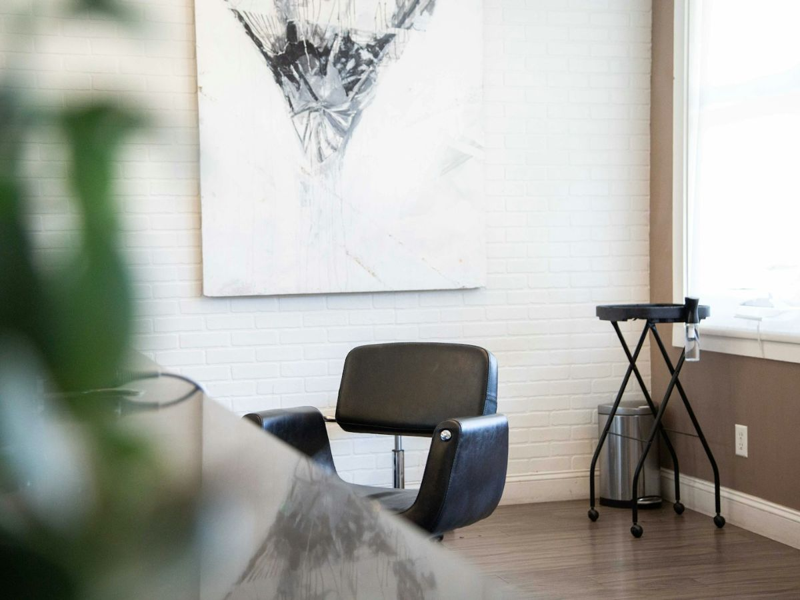
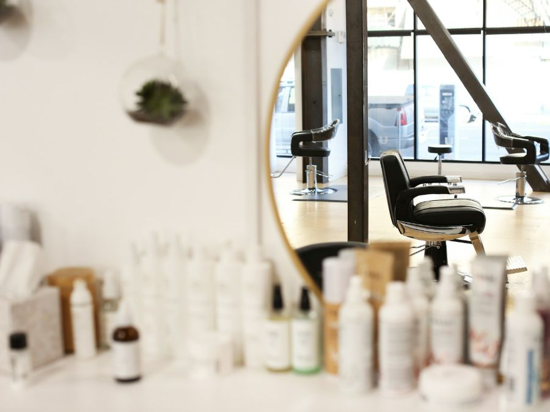
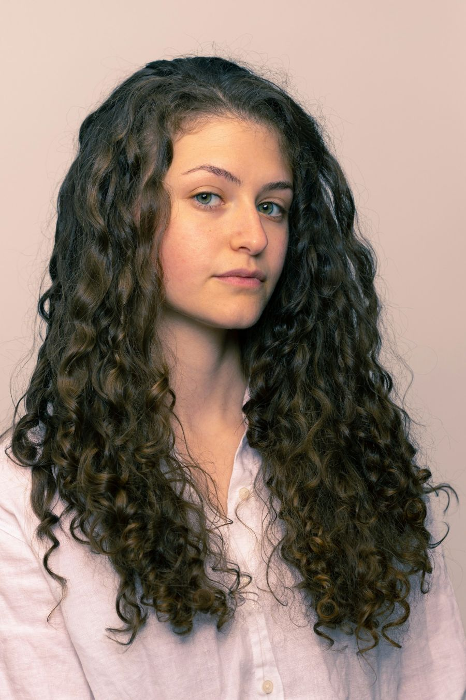

Parrucchiera a Borgo Sorive
Capelli in ordine.
Testa leggera.
Prima ti ascoltiamo, poi prendiamo le forbici.
Taglio, colore e piega senza fretta, in un salone piccolo.
Il tuo stile.
Le nostre mani.
Quattro cose, fatte bene
Cosa facciamo
in salone.
Dalla spuntatina al cambio di colore:
scegli da dove partire, il resto lo decidiamo insieme.
Non sai da dove iniziare? I prezzi te li diciamo prima di iniziare.


Foto di ambientazione da UnsplashPiacere, siamo Onda Lenta
Due poltrone.
Tutto il tempo che serve.
Onda Lenta è un salone piccolo nel centro di Borgo Sorive. Marta taglia e colora i capelli di donne, uomini e bambini, una persona alla volta.
Prima del taglio ci sono cinque minuti per parlare: come porti i capelli, quanto tempo hai la mattina, cosa non ti è piaciuto l’ultima volta.
Parrucchiera a Borgo Sorive
La prossima idea parte da qui
Trova la tua ispirazione.

Foto di ispirazione da Unsplash: non sono lavori del salone.
Le parole più belle sono le vostre
Ci si affeziona.
«Le ho portato una foto e mi ha detto subito cosa si poteva fare con i miei capelli e cosa no. Il taglio è venuto proprio così.»
«Ci porto anche mio figlio di sei anni. Pazienza infinita e nessuna lacrima.»
Recensioni e valutazione sono inventate per questo sito dimostrativo.
Ci vediamo in salone
Il tuo prossimo
bel momento.
Una richiesta online o una telefonata.
Al resto pensiamo insieme.
Chiamaci per prenotare o chiedere un consiglio
Ti aspettiamo qui
Via del Mulino 9Borgo Sorive (Piemonte)
Gli orari del salone
- Martedì, mercoledì e venerdì
- 9:00 – 18:30
- Giovedì
- 9:00 – 12:30
14:30 – 19:30 - Sabato
- 8:30 – 17:00
- Domenica e lunedì
- Chiuso
Il giovedì sera è pensato per chi lavora.
Prima di passare…
Come posso prenotare?
Puoi scegliendo servizio, giorno e orario preferiti, oppure chiamare il +39 000 000 0000. L’appuntamento è valido dopo la nostra conferma.
Il salone è anche per uomo e bambino?
Sì, tagliamo i capelli a donne, uomini e bambini. Per i più piccoli conviene il mattino, quando il salone è più tranquillo.
Dove trovo i prezzi?
Il prezzo dipende dalla lunghezza e da cosa vuoi fare. Te lo diciamo prima di iniziare, oppure chiedilo al +39 000 000 0000.